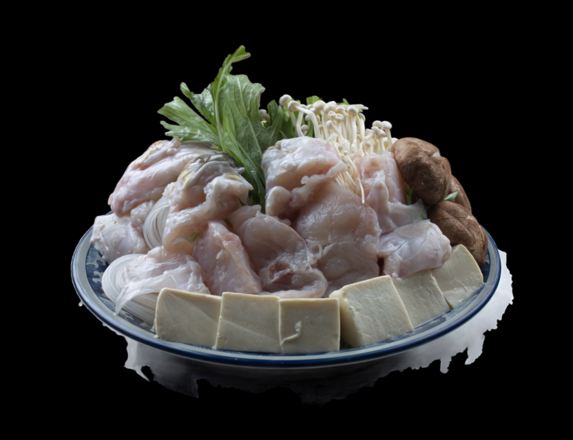

深廣
とらふぐ鍋セット
ふぐ・野菜・豆腐と、撮影時の皿を含む全体モデルです。
写真の色で机に置く

写真に写った色と陰影を使った、鍋セット全体の立体です。iPhoneで机に置いて、ふぐの身や野菜を横や背面からも確認できます。

全周の立体 · 25.70 MB USDZを保存

Brushのツヤを見比べる
2つのUSDZから同じ角度で描画した画像です。左右にスワイプして回し、容量を切り替えて比較できます。
全体
深廣
ふぐ・野菜・豆腐と、撮影時の皿を含む全体モデルです。

写真に写った色と陰影を使った、鍋セット全体の立体です。iPhoneで机に置いて、ふぐの身や野菜を横や背面からも確認できます。
全周の立体 · 25.70 MB USDZを保存
2つのUSDZから同じ角度で描画した画像です。左右にスワイプして回し、容量を切り替えて比較できます。